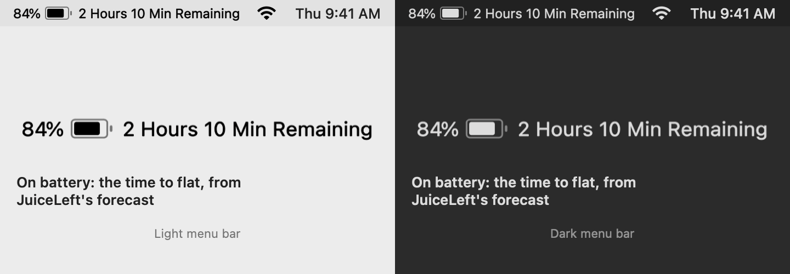
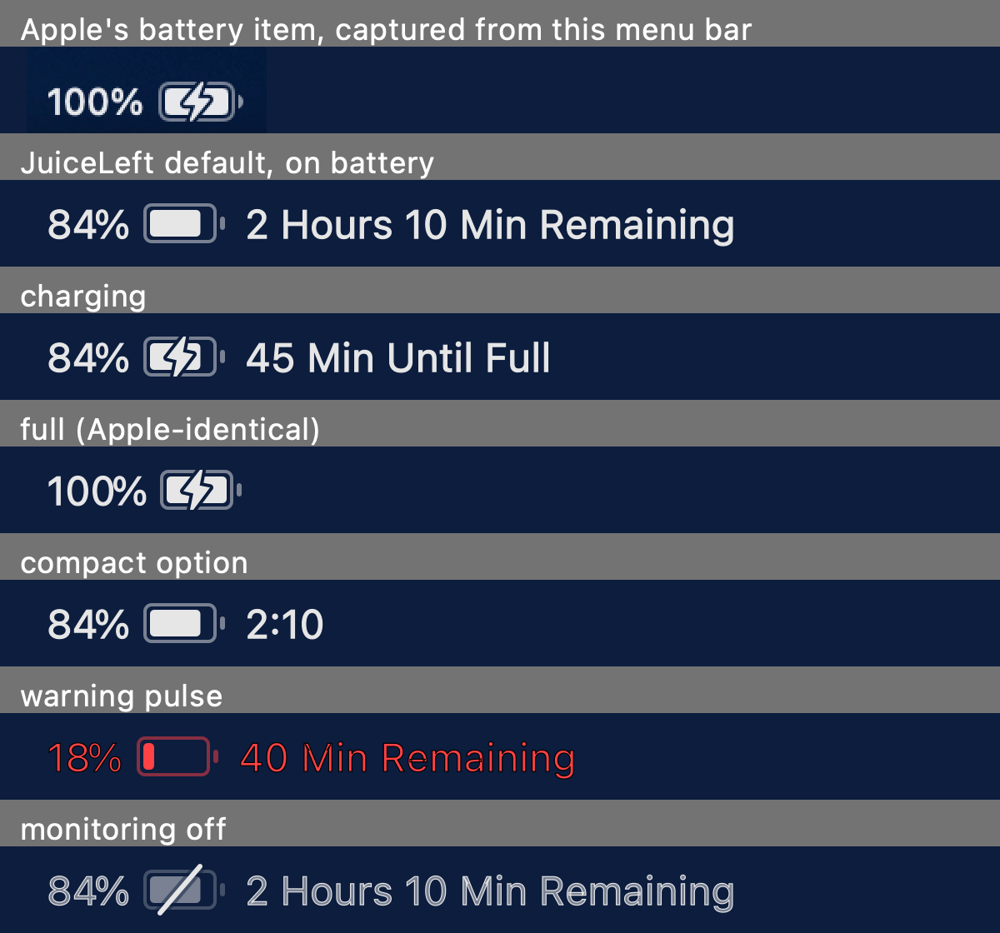
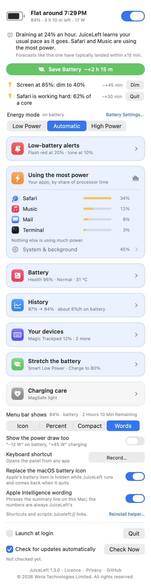
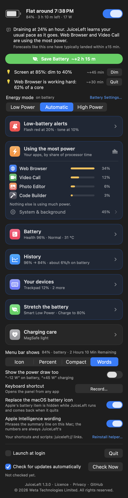
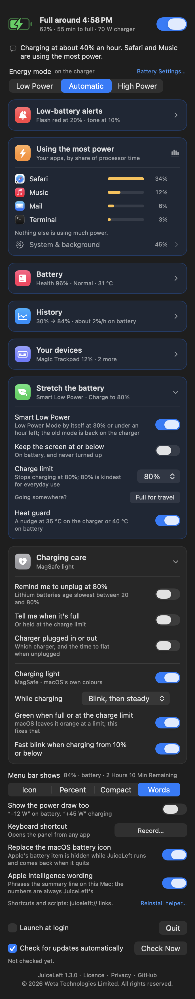
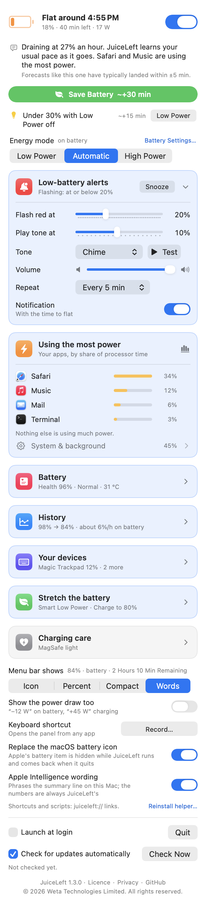

Apple's battery icon, with the time left
JuiceLeft's item is drawn to Apple's exact geometry and takes Apple's spot: 84% [battery] 2 Hours 10 Min Remaining, 45 Min Until Full while charging, just 100% [battery] when full. Below the warning level the whole item pulses red until you plug in; a press-and-hold turns monitoring off and puts a slash through the glyph. Quit JuiceLeft and Apple's item comes back exactly as it was.


When, not just how much — and how to make it later
A forecast that learns from its own misses, alerts that never nag twice, one click that buys you hours, and the settings that keep a battery healthy — in one panel.
A forecast that learns
Three opinions of your drain rate — the gas gauge right now, the trend of the last 20 minutes, and what you typically drain at this time of day — blended by how wrong each has recently been. It checks itself every five minutes and re-weights.
It tells you how accurate it is
Every forecast made during a discharge is scored, once you plug in, against when the level really arrived. After a couple of discharges: “Forecasts like this one have typically landed within ±15 min.”
Save Battery, one click
Low Power Mode, the screen down to 40 %, the keyboard light off — with what that gains (~+3 h 15 m) before you click. One Undo puts everything back exactly; so does plugging in. The gain is estimated until JuiceLeft has measured what those changes save on your Mac.
Tips with one-click fixes
Only what is costing power right now: a bright screen (Dim), the keyboard light on in a lit room (Turn off), Low Power off under 30 % (Low Power), an app hogging a core (Quit), a hungry USB device. Each with its gain.
Warning and alert levels
At 20 % (yours to change) the item pulses red. At 10 % a tone plays — JuiceLeft's own chime or any macOS alert sound — once or every 2 / 5 / 10 minutes until you plug in. Optional notifications, a 30-minute snooze, and a 2 % hysteresis so a bounce can't sound it twice.
Energy mode, from the panel
Low Power · Automatic · High Power for the power source in use — the same setting as System Settings › Battery. Setting it needs root, so a short shell script is installed as a root job with one admin prompt; nothing but exactly b|c × 0|1|2 ever reaches pmset.
Stretch the battery
Smart Low Power by itself at 30 % or under an hour left, the old mode back on the charger. Keep the screen at or below a cap on battery. Charge limit (macOS 26.4+): Apple's own, 80–100 %, with Full for travel. Heat guard at 35 °C charging or 40 °C on battery.
Click, hold, hover
A click on the item opens the panel. Press and hold it to turn monitoring on or off without opening anything — the trackpad taps back. Rest the pointer on it for a card with the time in words and Flat around 4:22 PM.
Using the most power
Your apps, the top five by share of processor time, helpers folded into the app that owns them, the rest as one System & background line. Each with a ✕ Quit: a graceful quit first, so unsaved work gets its save prompt; Force Quit only if the app is still there 5 s later, behind one confirmation.
Battery health, and a coach
Apple's own health figure as the headline, then condition, cycles, the capacities, temperature, voltage, charger watts, watts in or out, total draw, macOS's estimate for comparison, the last twelve hours as a chart — and how much of the last three days the battery sat full, cycles per week, the health trend, and a one-tap Set 80%.
A plain-English line
“Draining at 14 % an hour, easier than your usual 20 % for this time of day.” On macOS 26 with Apple Intelligence on, the on-device model phrases it — and every number is checked against JuiceLeft's own, so it can never invent one. Optional; the template stands everywhere else.
Quiet by design
Samples the battery every 30 s and only draws when something changes; the app list and the tips only run while the panel is open. No Dock icon, no analytics, no network beyond a daily update check. Launch at login, and the menu bar showing the icon, the percent, the compact time or the words.
How it works
macOS's own “time remaining” reacts to every change in load. JuiceLeft's rests on three opinions and a memory — a few thousand readable lines of Swift and one short shell script.
The forecast
The swap
Control Center keeps a per-host preference that System Settings › Control Center sets to hide Apple's battery item, and picks up live. JuiceLeft sets the same value on launch (remembering what was there), copies Apple's saved menu-bar position to its own item so it lands in the same place, and on quit puts the original back. A switch in the panel turns the swap off at once.
The alerts
On battery, each level latches on the way down and only releases 2 % above it. The tone plays once on entering the alert level, again every repeat interval while still there, and again when a snooze runs out. The charger going in clears everything and re-arms.
What a change is worth
Out of the box, cautious defaults: the display's draw climbs steeply with brightness, Low Power trims about 15 %, and no default claim may exceed 30 % of the drain — such gains are marked ~. Every five minutes on battery JuiceLeft records the drain against brightness and Low Power and fits a tiny regression; once it has two dozen windows with real spread, its own numbers take over.
Every battery figure comes from IOPowerSources and the AppleSmartBattery registry entry — the same numbers as Apple's battery menu, plus the gas gauge's raw capacities so the forecast sees the level move between whole percents. Per-app energy from processor time through libproc. The charge limit through the same in-process client Apple's own UI uses. Nothing needs root but the energy modes.
The panel
Click the menu-bar item. A status header with the forecast, one plain sentence and how accurate it has been, Save Battery and the tips, the energy mode, then a card each for the alerts, the apps using the most power, battery health, stretching the battery and charging care. Light or dark, it follows your Mac — and Reduce Motion, Increase Contrast, the keyboard and VoiceOver.




Download & install
Grab the installer, drag JuiceLeft into Applications, and you're done.
- Open the DMG and drag JuiceLeft into Applications.
- Open JuiceLeft from Applications. It isn't notarized by Apple yet, so the first launch needs one extra step: macOS 15 or later — when macOS says it can't verify the app, click Done, open System Settings → Privacy & Security, scroll down and click Open Anyway; macOS 13–14 — right-click JuiceLeft, choose Open, then Open again. Only the first time.
- Apple's battery icon disappears and JuiceLeft's item takes its spot, with the time left after it. It asks once whether it may post notifications; say no and the pulse and the tone still work. The panel offers a one-time setup for the helper behind energy modes and the charging light — your password or Touch ID, once; it then updates itself from signed files, and JuiceLeft checks GitHub for updates about once a day and installs them from the panel.
Or build it from source
A few seconds with Xcode or the Command Line Tools (xcode-select --install):
git clone https://github.com/CyborgFingers/JuiceLeft.git
cd JuiceLeft
./build.sh installBuilds build/JuiceLeft.app, copies it to /Applications and launches it. To uninstall, quit JuiceLeft (that puts Apple's battery icon back), run sudo /bin/sh /Applications/JuiceLeft.app/Contents/Resources/juiceleft-helper.sh uninstall if you ever set an energy mode, and move the app to the Trash — or ./build.sh uninstall from a source checkout. If the battery icon didn't come back, System Settings › Control Center › Battery › Show in Menu Bar is the switch.
- Test it:
JuiceLeft.app/Contents/MacOS/JuiceLeft --selftestwalks the alert rules, the forecast and its learning, the menu bar's words, the savings model, the tips, the guards and the click logic;--simulateruns a fake battery draining 1 % a second so you can watch the flash, the tone, the charger reset and the heat guard;./test-helper.shchecks the helper against a fakepmset. - Privacy: no analytics; the only network activity is the daily update check (a plain request to GitHub, which you can turn off) and the update you start. Updates are Ed25519-signed and verified before anything is unpacked. The helper only ever runs
pmset; the Apple Intelligence sentence is generated on device; settings and what it has learned are two files in your home folder, yours to delete.